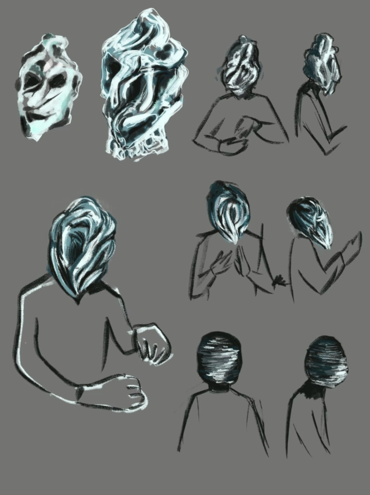
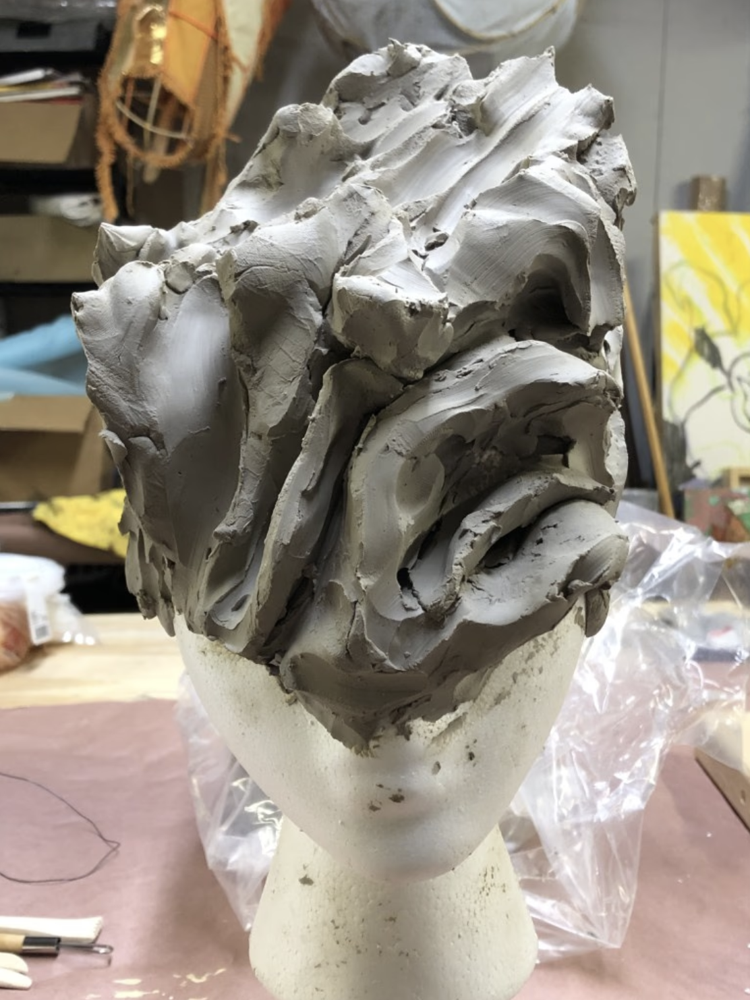
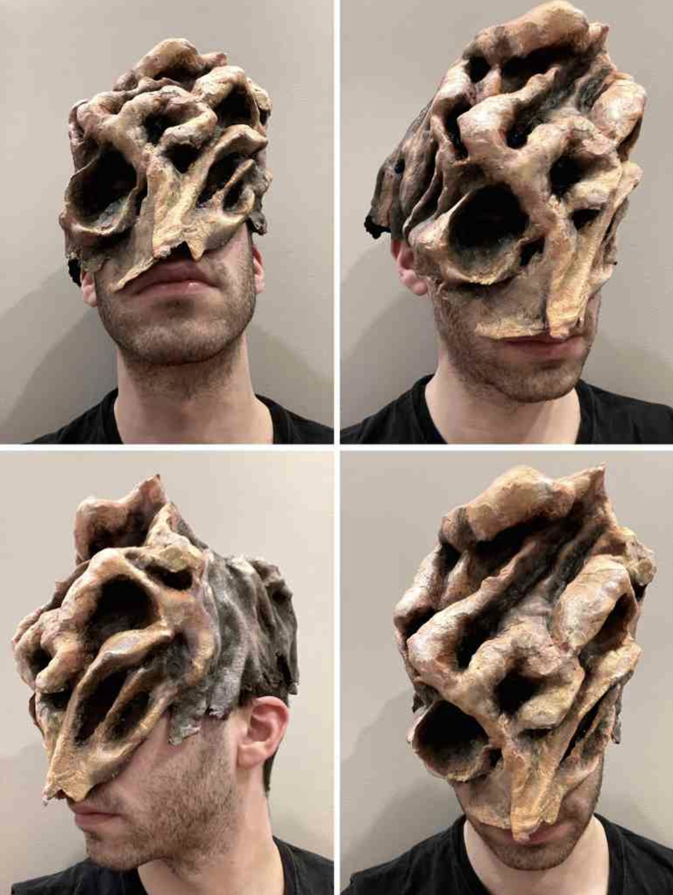
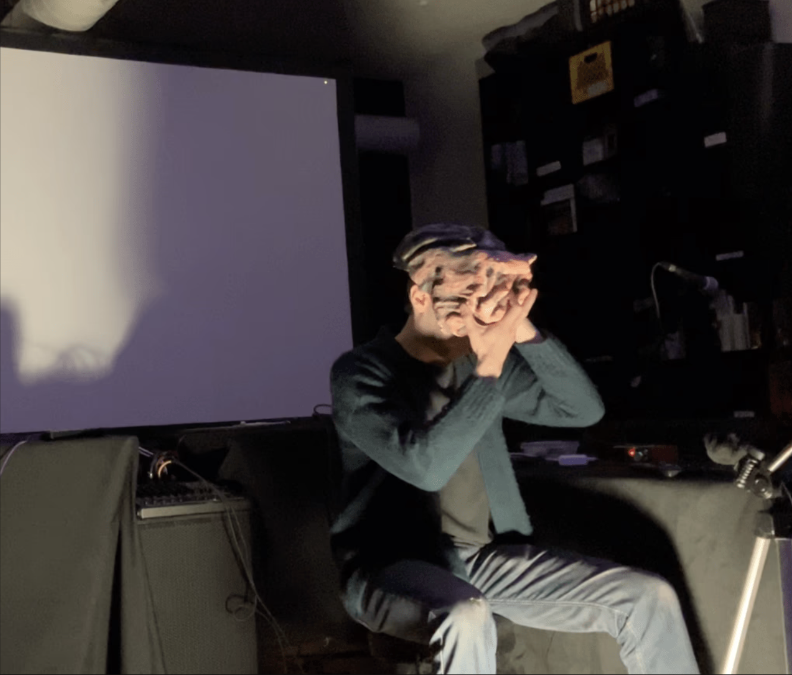

In the past 5 posts, I’ve gone in depth about 2 solo projects that I’ve created and performed over the past 2 years. This will be the final post in the series, and it will be about dramaturgy.
Let me first say that I’m not an actor. I’ve been working with dancers since 2014, and I’ve done martial arts, swing dancing, conducting (musicians), and movement classes on and off since I was a teenager. I have deep associations between movement and sound. This being said, I wouldn’t consider myself a strong solo physical performer. Thus, while I was developing this project, and it became clear that I would have to develop this strength, I started feeling anxiety.
Again, the question of situating a toy. I made a computer program that can translate hand motions into sound and visuals. Why? What questions am I posing, what concepts am I trying to work through, and why should an audience watch? The solution that revealed itself to me was dissociation. I didn’t want to be vulnerable on stage without my viola, but someone else could. I decided to develop a character into whom I could transform.
Still though, it’s my body and my face. I was too shy to have the audience see me emote alone on stage. That’s when I realized I needed a mask to obscure my face. I didn’t want the audience to see my eyes.
I was introduced to puppeteer Grace Needlman through Cristal Sabbagh. Grace and I got on the phone to talk about the performance, and I remember her asking me “what do you want to transform into, and how do you want the mask to make you feel?”. I honestly didn’t know how to answer.
It took me a while to make a mood-board for Grace. As I was imagining the mask, I couldn’t get out of my head the image of Cillian Murphy playing the Scarecrow in the movie “The Dark Knight”. I was looking for something uncanny; between a halloween costume and a sculpture. I didn’t want the mask to be too human, but I wanted to leave my mouth exposed. Grace sent me some sketches and we had a few rounds of prototypes and feedback.



I’m super happy with how the mask turned out. It hides my gaze like a pair of dark sunglasses, and it also lets me drift into the character of this strange figure. Once the mask came into being, it became easier to structure the dramaturgy of the piece.
I could start the piece by simply exploring the mask;
-
Trigger some background music to situate the space
From a seated position, pick it up off the floor
Touch it, explore it, get to know it
-
Put it on my face
Feeling how it transforms my body

I needed to take this moment slowly, settle the nerves, get comfortable, breathe easy, and focus. During this, I programmed a simple sonic environment to wet the audience’s ears and give an audible background to my actions. Just some pulsating white noise and a couple of resonators.
After this moment passes, I’d hit a cue on the computer that would set into motion the majority of the performance. The intro sounds would fade out, and the camera-triggered sounds would fade in.
The performance continues through the 3 sections that I described in the previous entry, but in the end, it needs an ending. Figuring out how to wrap things up is always complicated. Like my previous solo performance, I didn’t want to fade everything out. I needed something deliberate and intentional. I wanted to break the rules established previously in the performance, deconstruct their elements, lay them to rest, and spark some unanswered questions.
More specifically speaking, to end the performance, I decided to:
Use the motion of the tripod as an instrument, spinning it to remove myself from the main focus, have it face the audience at some moments, and have the sound be triggered by a motion sensor attached to the tripod.
For the tripod sound, create a transition from the fully electronic aesthetic of everything that came before towards something more acoustic and intimate sounding. I wanted to pick a sample that was instantly recognizable, so I went with the ending of Bach’s G Major Cello Suite Prelude. A recording of someone playing alone. This sample would be processed using the motion sensor attached to the tripod, so the recording’s identity would not yet be recognizable.
After exploring this idea, trigger a cue, slowly fading in the unedited Cello Suite recording, fading out the projections.
Remove the mask
Pick up and fold up the tripod, set it on the ground at my feet
Time these actions so the recording ends right after setting down the tripod
Look at the audience, ending the performance
Here's a clip of the last 3 minutes of the performance.
Why did I choose to end the performance this way?
By using the tripod as an instrument, the audience discovers a new aspect of the performance environment. The performer is manipulating the tripod, and the camera’s point of view changes. The motion sensor is not obviously embedded in the webcam, so there’s a moment of confusion as the audience figures out what’s happening and how. Additionally, the performer moves the focus of attention from themselves to the audience, placing the performer in a slightly antagonistic and voyeuristic posture.
The sound coming from the tripod movements is meant to bridge a conceptual gap between the purely digital environments from before, and the unedited sample that ends the piece; a transition from the abstract to the familiar. The speed of the tripod movements affects the volume, pitch, and speed of the sample playback, so we still have a movement-to-visual-to-sonic connection.
As the unedited Cello Suite recording fades in and the projections fade out, I remove the mask and take a moment to re-transform myself into a human and re-discover myself. The journey is over and I’m able to fully face the audience without mediation. I fold up the tripod and set it down to “dismantle the instrument”. Doing this creates an anticipation of the ending and brings a sense of closure. The recording ends with the familiar and satisfying cadence as my body breaks character.
What I learned about myself and where to go from here
I can perform alone without my viola.
I can do solo performance art, but I’m more comfortable when there’s some idea of mediation between my identity and the audience.
I can transform myself conceptually into something else.
I can create and operate a digital semi-autonomous motion-sensitive audio-visual environment using TouchDesigner and MaxMSP.
I can create dramaturgy from movement in a solo 20-minute improvisation.
The projects I have lined up for the next few months are all collaborations. I was asked to write a trio for piano, violin, and cello, and I’ll be involved in a few musician-dancer projects. It was a thrill to explore the solo side of performance-art making.